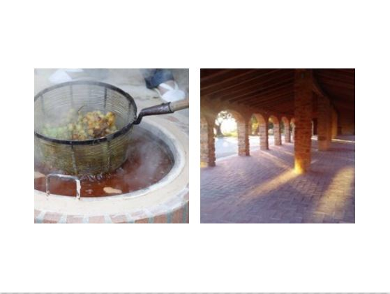

Seaside farmlands
Vineyards
.JPG)
Origin
The vineyard is native to Asia Minor, it arrived in the province of Alicante during the Phoenician period, although not began to be cultivated for consumption until the arrival of the Iberians, as attested by the deposit of Benimaquía, at the top of Mount Montgó, where the one that is probably the most old wine producing center of the Iberian Peninsula, dates from the sixth century a. C. Nevertheless, as with other crops, it was the Romans who intensified their production. From the important port of Denia, the wine of the region came to Italy and North Africa. With the passing of the centuries it collected very important the export of grapes passes, especially during the S.XIX, this fact left in the background wine production.
Where to find them
Most of the vineyards we find in the region are located in the area of Teulada and Benissa, together neighboring Xaló, Llíber and Parcent. Although vineyards can also be found in other populations as Poor Jesus.
Experiences
Flowering period:Between the end of May and the beginning of June comes the flowering of the vine. Time when the embryos of the flowers appear, which will later give rise to the grains of the grapes that will form the clusters. the flowering of the vine will mark the beginning of the harvest and also the harvest volume. For example, if the vine flowers soon, we will have an early harvest. Harvesting period: The harvest is traditionally done during the month of September. Although depending on the grape variety and its ripening cycle, the period can be extended to November. In the case of the Moscatell variety of Alexandria, its collection is one of the most early in Spain, sometimes starting in mid-August due to the Mediterranean summer with temperatures that cause it to mature gradually and steadily.
This period is one of the most interesting times of the year for wine tourism, customs, traditions, flavors and a lot of activity.
Do you know the Riuraus Route?
Landscape, rural architecture, urban and rural heritage, gastronomy and art.
